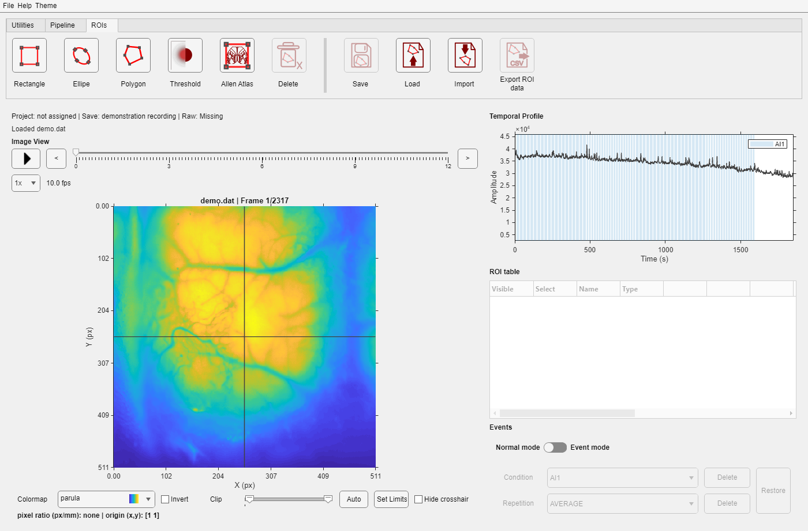
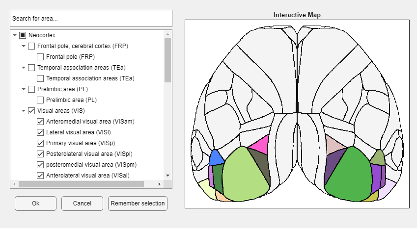

Create regions of interest (ROIs) for cortical areas or other structures and compare their signals.
Open image data. A project binding is not required for ordinary ROI drawing or ROI files.

Allen Atlas opens the creator inside the ROI workflow; it is not a separate project resource page.

Atlas limitations
The atlas is a two-dimensional placement aid, not an anatomical registration guarantee. Check coverage against the displayed cortex. Atlas geometry outside the active logical mask can be clipped, and an unsuitable orientation or damaged field of view requires manual correction.
Each ROI appears as an overlay and a row. Visible ROI traces are calculated from the current data.
Drawing, editing, thresholding, Boolean operations, and atlas placement are in memory until Save. A .roi file stores geometry and metadata; it does not alter imaging samples. Remember selection stores only the atlas selection preference.
| Problem | Action |
|---|---|
| Loaded ROIs have another image size | Choose the offered scale or compatible load action, then inspect every result. |
| An ROI disappears after masking | The active logical mask left it empty; undo or reset the mask, then reload the ROI file if needed. |
See the full ROI management reference.